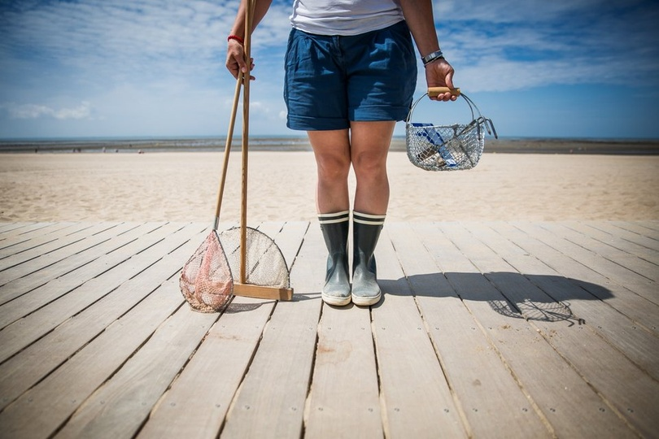

La pêche à pied, une pratique ancestrale et souvent sous-estimée, est bien plus qu'un simple loisir estival. C'est une compétence fondamentale pour la survie et l'autonomie alimentaire en milieu côtier. Elle implique la récolte d'organismes marins — coquillages, crustacés, algues comestibles — directement sur l'estran découvert à marée basse. Cette activité, qui demande un sens aigu de l'observation et une bonne dose de patience, peut se révéler une source de nourriture précieuse et diversifiée, particulièrement pertinente dans un contexte de survie ou de recherche d'autonomie.
Dans une situation où l'accès aux ressources est limité, l'alimentation devient une priorité absolue. La pêche à pied se présente alors comme une solution remarquablement efficace et accessible. Elle ne requiert souvent que des outils rudimentaires, voire simplement vos mains, ce qui la rend praticable même dans les conditions les plus précaires. Les produits de la pêche à pied sont une mine de nutriments : ils sont riches en protéines de haute qualité, essentielles pour la réparation musculaire et l'énergie, ainsi qu'en minéraux (comme le fer, le zinc, le sélénium) et en oligo-éléments vitaux pour le maintien des fonctions corporelles et de la santé globale. Maîtriser ces techniques ne se limite pas à trouver de quoi manger ; cela vous confère une autonomie significative face aux imprévus de l'environnement, réduisant votre dépendance à des systèmes d'approvisionnement externes.
Avant de vous lancer dans l'aventure de la pêche à pied, une étape indispensable est de vous informer minutieusement sur la réglementation en vigueur. Les lois, qu'elles soient locales ou nationales, encadrent strictement cette pratique. Elles définissent les espèces dont la pêche est autorisée, les tailles minimales de capture pour préserver les juvéniles, les périodes d'ouverture et de fermeture pour respecter les cycles de reproduction, ainsi que les zones spécifiques où la pêche est permise ou interdite. Ces zones peuvent inclure des réserves naturelles protégées, des parcs marins, ou encore des zones contaminées où la consommation de fruits de mer serait dangereuse. Le non-respect de ces règles peut entraîner des amendes substantielles ou d'autres sanctions légales.
Au-delà de l'aspect légal, il est de votre responsabilité éthique de pratiquer une pêche durable. Cela signifie veiller à ne pas surexploiter les ressources, en ne prélevant que ce dont vous avez besoin et en respectant les quotas. Le but est de minimiser votre impact sur l'écosystème marin. Chaque pierre soulevée doit être remise délicatement à sa place, chaque algue déplacée ne doit pas être arrachée inutilement. Adopter une démarche respectueuse assure la pérennité des populations marines pour les générations futures et maintient l'équilibre délicat des littoraux.
Chaque espèce marine a ses particularités, et donc ses techniques de pêche spécifiques.
Les couteaux de mer sont des bivalves fouisseurs qui se cachent profondément dans le sable. Pour les repérer, soyez attentif aux trous en forme de huit ou de serrure à la surface du sable. Une légère dépression ou un petit jet d'eau au moment où vous marchez peuvent également indiquer leur présence. La technique la plus populaire et efficace consiste à verser une pincée de gros sel dans le trou. Le couteau, irrité par le sel, remontera alors à la surface, vous permettant de le saisir délicatement mais fermement avant qu'il ne disparaisse à nouveau. Vous pouvez aussi tenter d'insérer un brin d'herbe ou une fine tige dans le trou pour le stimuler à sortir.
Ces coquillages sont également des habitants du sable et de la vase. Ils se signalent par de petits trous ronds ou ovales à la surface, souvent entourés de légères ondulations ou de petits siphons visibles lorsque l'eau se retire. Munissez-vous d'une griffe à trois ou quatre dents ou utilisez simplement vos mains. Grattez délicatement la surface du sable sur quelques centimètres de profondeur. Une fois que vous sentez une résistance, dégagez le coquillage avec précaution pour éviter de l'endommager.
Les crabes, crevettes, et autres petits crustacés adorent se réfugier sous les rochers, dans les anfractuosités et parmi les algues sur l'estran rocheux. Soulevez les pierres avec précaution — et n'oubliez jamais de les remettre exactement à leur place pour préserver l'habitat ! — et explorez les crevasses avec une attention particulière. Un simple crochet au bout d'une ficelle, muni d'un appât (un petit poisson mort, un morceau de coquillage), peut attirer les crabes hors de leur cachette. Un petit filet à main est également très efficace pour les capturer rapidement dès qu'ils apparaissent.
Ces gastéropodes et bivalves se fixent en grand nombre sur les rochers découverts à marée basse, particulièrement dans les zones de l'estran rocheux. Pour les bigorneaux, il suffit de les détacher délicatement des rochers. Pour les moules, privilégiez celles qui sont facilement accessibles et bien développées. Évitez d'arracher des touffes entières, car cela peut gravement endommager les populations et empêcher leur régénération.
Les crevettes sont agiles et aiment les eaux peu profondes. Elles se trouvent souvent dans les mares d'eau laissées par le retrait de la mer ou dans les zones de ressac où les vagues brassent le fond et mettent en suspension leur nourriture. L'épuisette, maniable et légère, est idéale pour les mares. Le havenau, un filet monté sur un cadre triangulaire ou rectangulaire avec un long manche, permet de racler le fond plus efficacement dans les zones de ressac.
Ces échinodermes, bien que souvent impressionnants par leurs piquants, sont prisés pour leurs gonades comestibles. Ils se trouvent généralement fixés aux rochers ou cachés dans les anfractuosités. Utilisez une pince ou un outil à long manche pour les saisir délicatement. Le port de gants épais est indispensable pour éviter les piqûres douloureuses de leurs aiguilles. Il est crucial d'identifier les espèces comestibles ; toutes les espèces d'oursins ne le sont pas. Renseignez-vous sur les spécimens locaux comestibles par leur taille, couleur et la forme de leurs piquants. Seules les gonades sont consommées.
Développer son sens de l'observation est primordial pour une pêche à pied réussie et sécurisée.
Une connaissance approfondie des coquillages locaux est essentielle pour distinguer les espèces comestibles des toxiques ou indigestes. Apprenez à reconnaître les formes (ovale, allongée, ronde), les couleurs (blanc, gris, brun, rayé) et les particularités (présence de côtes, d'épines, de motifs spécifiques) de chaque espèce. En cas de doute, la règle d'or est simple : abstenez-vous de consommer. Mieux vaut la prudence que le risque d'intoxication.
Les organismes marins laissent de nombreux indices de leur présence. Soyez attentif aux trous dans le sable, qui indiquent la présence de coquillages fouisseurs. Les coquilles cassées peuvent signaler l'activité de prédateurs ou des zones de forte concentration de coquillages. Les algues retournées peuvent cacher des crabes, des petits poissons ou d'autres animaux marins. Apprenez à lire ces "empreintes" de la nature.
La sécurité alimentaire est non négociable. Avant toute récolte, il est vital de vous renseigner sur la qualité des eaux de la zone de pêche. Les autorités locales affichent souvent des panneaux d'information signalant les risques de pollution (chimique, bactériologique) ou la présence de toxines produites par certaines algues (comme lors des marées vertes). Évitez absolument de pêcher dans les zones portuaires, les estuaires pollués, ou après de fortes pluies qui peuvent entraîner des ruissellements contaminés depuis la terre. Consommer des coquillages provenant de zones insalubres peut provoquer de graves intoxications.
Un équipement adéquat améliore non seulement le confort mais surtout la sécurité et l'efficacité de votre pêche.
En situation de survie, la capacité à improviser est primordiale.
Si vous n'avez pas d'outils sophistiqués, la pêche manuelle est toujours une option. Cela demande de la patience, de l'observation et un peu d'ingéniosité. Vous pouvez utiliser des pierres trouvées sur place pour casser les coquilles des mollusques et accéder à la chair. Soyez extrêmement prudent pour éviter de vous blesser.
Apprenez à anticiper les horaires des marées basses en consultant les tables de marées, car ce sont les moments les plus propices à la pêche à pied. Certaines espèces peuvent être plus abondantes à certaines phases lunaires ou selon les saisons, bien que l'influence sur les marées soit la plus directe et significative.
La pêche de nuit peut être nécessaire dans certaines situations d'urgence. Cependant, elle comporte des risques accrus. Utilisez une source de lumière fiable et étanche (comme une lampe frontale), marchez lentement et prudemment pour éviter de glisser sur les algues ou de vous couper sur les rochers. Soyez particulièrement vigilant à la remontée de la marée, qui peut être difficile à percevoir dans l'obscurité.
Si vous êtes en groupe, organiser une pêche collective peut optimiser l'effort. Répartissez les tâches : certains peuvent se concentrer sur la recherche des zones productives, d'autres sur la récolte des prises, et d'autres encore sur la surveillance des environs et de la marée pour alerter le groupe en cas de danger.
L'efficacité de la pêche à pied repose aussi sur une observation fine de l'environnement.
Avec l'expérience, vous développerez une intuition pour identifier les types de substrat (sable fin, sable grossier, mélange de sable et de graviers) et les zones de l'estran les plus propices à la présence de certaines espèces de coquillages. Cherchez les indices de vie spécifiques à chaque zone.
Certains organismes marins, comme les crevettes ou certains petits poissons côtiers, sont sensibles aux vibrations et aux mouvements brusques. Approchez-vous des zones de pêche lentement et sans faire de vagues pour augmenter vos chances de capture avant qu'ils ne se cachent.
Soyez attentif aux petits mouvements à la surface des mares ou dans les zones peu profondes. Des ondulations subtiles, de petits sauts, ou des déplacements rapides peuvent indiquer la présence de crevettes ou de jeunes crabes. La patience est souvent récompensée.
Une fois la récolte effectuée, la conservation est essentielle pour ne pas gaspiller vos précieuses prises.
Immédiatement après la récolte, rincez abondamment vos prises à l'eau de mer pour éliminer le sable, les algues et autres impuretés. Cela facilitera la consommation et la conservation.
En situation de survie, sans réfrigération, des techniques rudimentaires peuvent prolonger la durée de vie de vos prises. Le fumage au-dessus d'un feu doux, le séchage au soleil et au vent (particulièrement pour certains coquillages ouverts), ou la salaison (si vous disposez de sel) peuvent être envisagés. Cependant, la cuisson immédiate est souvent la méthode la plus sûre et la plus recommandée pour éviter la prolifération bactérienne et la dégradation rapide des produits.
Rien ne doit être gaspillé. Les coquilles, riches en calcium et en minéraux, peuvent être broyées (avec un peu d'effort) et ajoutées à un compost ou utilisées comme amendement pour enrichir le sol, si vous avez un potager ou une zone de culture.
La pêche à pied, bien que gratifiante, comporte des risques qu'il faut absolument anticiper.
La marée montante est le danger numéro un de la pêche à pied. Consultez impérativement les horaires des marées avant de vous aventurer sur l'estran et soyez vigilant quant à sa progression. Repérez les points de repli sûrs et gardez toujours un œil sur l'eau. Ne vous laissez jamais encercler par la mer.
Les coquilles brisées peuvent être tranchantes comme des rasoirs. Portez toujours des gants et des chaussures adaptées. Soyez prudent lors de la manipulation des oursins pour éviter les piqûres. Les rochers recouverts d'algues peuvent être extrêmement glissants ; marchez lentement et avec précaution.
Comme mentionné précédemment, contrôlez la qualité des eaux (pollution, marées vertes) auprès des autorités locales. Évitez de pêcher dans les zones suspectes, car la consommation de fruits de mer contaminés peut entraîner des maladies graves.
Ayez toujours une trousse de premiers secours à portée de main. En cas de coupure, nettoyez la plaie à l'eau de mer (si propre) ou à l'eau potable, et protégez-la. En cas de piqûre d'oursin, essayez de retirer délicatement les aiguilles sans les casser. Si la blessure est profonde, saigne beaucoup ou s'infecte, cherchez une assistance médicale sans tarder.
La pêche à pied est un privilège qui s'accompagne d'une grande responsabilité.
Familiarisez-vous avec les réglementations locales concernant les quotas de capture par espèce et les tailles minimales autorisées. Relâchez systématiquement les individus trop petits pour leur permettre de grandir et de se reproduire. C'est la garantie de pêcher encore demain.
Certaines zones peuvent être des frayères (zones de reproduction) pour certaines espèces à des périodes spécifiques de l'année. Évitez de perturber ces zones sensibles pour ne pas compromettre le cycle de reproduction et l'avenir des populations.
Soyez un modèle de propreté. Emportez tous vos déchets avec vous (emballages, restes de repas, etc.) et ne laissez aucun filet, hameçon ou outil abandonné sur l'estran, car cela représente un danger majeur pour la faune marine.
Lorsque vous explorez sous les rochers, replacez-les délicatement après votre passage exactement comme vous les avez trouvés. Évitez d'arracher les algues inutilement, car elles constituent un habitat essentiel et une source de nourriture pour de nombreux organismes marins. Chaque geste compte pour la préservation.
Les types d'estran varient, et avec eux, les espèces que l'on peut y trouver.
La pêche à pied est bien plus qu'une simple activité de loisir ou un passe-temps. En situation de survie, elle représente une compétence précieuse et potentiellement salvatrice qui peut vous fournir une source de nourriture vitale et diversifiée. En maîtrisant les techniques de base, en apprenant à identifier correctement les espèces comestibles et les signes de présence, en vous équipant adéquatement pour le confort et la sécurité, et en respectant scrupuleusement les règles de sécurité et l'environnement, vous augmenterez considérablement vos chances d'autonomie alimentaire en milieu côtier.
Que vous soyez confronté à une situation d'urgence où chaque ressource compte, ou que vous cherchiez simplement à développer vos compétences en survie et votre connexion avec la nature, la connaissance de la pêche à pied est un atout inestimable. Souvenez-vous que la patience, l'observation minutieuse et le respect profond de la nature sont les clés d'une pêche à pied réussie, durable et gratifiante. Elle vous offre non seulement de la nourriture, mais aussi une profonde compréhension de l'écosystème marin.